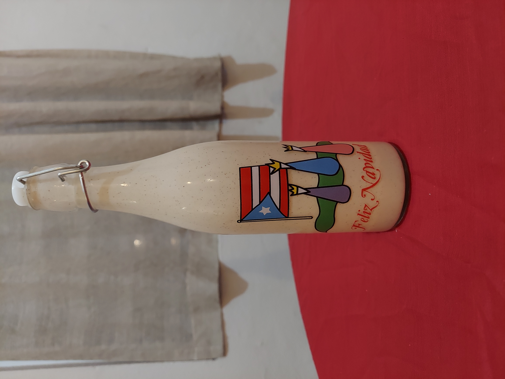

Coquito

Ingredients:
- 1 (14 ounce) can sweetened condensed milk
- 1 1 (15 ounce) can cream of coconut (like Coco Lopez or Goya)
- 1 (12 ounce) can evaporated milk
- 1 (13.5 ounce) can of coconut milk
- 2 teaspoons vanilla, or 1 vanilla bean, split and seeded
- 2 whole cinnamon sticks
- 1/2 teaspoon grated nutmeg
- 1 to 2 cups rum
- Grated nutmeg or ground cinnamon for garnish, optional
Step by Step:
- Place the sweetened condensed milk, cream of coconut, evaporated milk, coconut milk, vanilla, cinnamon sticks, and nutmeg (all the ingredients except the rum) in a large saucepan. Warm over medium-high heat until just starting to simmer.
Remove from heat, cover, and let infuse for 30 minutes.
- Remove the cinnamon sticks and the vanilla bean (if using) and pour the mixture into a punch bowl or pitcher. (Note: I rinse and dry the vanilla bean and cinnamon sticks, and save them future infusions such as rice pudding.)
Add 1 cup of rum and taste; add more rum for a stronger punch. I usually stick to around 2 cups as I prefer it strong.
- Chill this in the fridge for at least 2 hours or for up to 3 days.
- Serve neat or over ice in small portions. Garnish with grated nutmeg or ground cinnamon as desired.
Back to Home Page